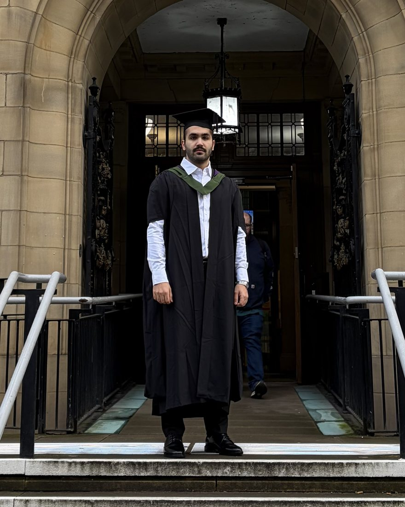

Four months, three doses
What iterating a cytotoxicity study taught me about patience and evidence.
I'm Parsa, a biomedical engineer. I have tested new biomaterials on bone cells, helped build a COVID-19 biosensor, modelled blood flow and spinal implants, and written software that reads medical device reports. This site collects that work and what I learn along the way.

Cell culture, cytotoxicity and bone-forming assays, molecular biology and a COVID-19 biosensor.
Finite element and blood-flow simulation, CAD design, and turning results into 3D and VR.
Python tools for images and lab data, SQL databases, and AI checked against human review.
How devices are made safe and brought to patients: risk analysis and market strategy.
Left to right: wet lab to computational. Top to bottom: close to the patient to fundamental research.
A four-month bench study asking whether a zirconium nanomaterial is safe for bone cells, and whether it helps them build bone.
Simulating blood flow in an aneurysm before and after a stent is placed, then turning the results into a VR scene that clinicians and patients can both understand.
Using a large language model to read 300 FDA adverse event reports for long-term central venous catheters, and testing how far its answers can be trusted.
Fifteen months in a research team developing a sensor that detects COVID-19 by measuring electrical signals, alongside broad day-to-day lab work.
What iterating a cytotoxicity study taught me about patience and evidence.
Turning ANSYS results into a VR scene that patients and clinicians can both read.
Three ways to sharpen an X-ray, and why over-sharpening is dangerous.
I'm happy to hear about roles, collaborations, or questions about any of my projects.